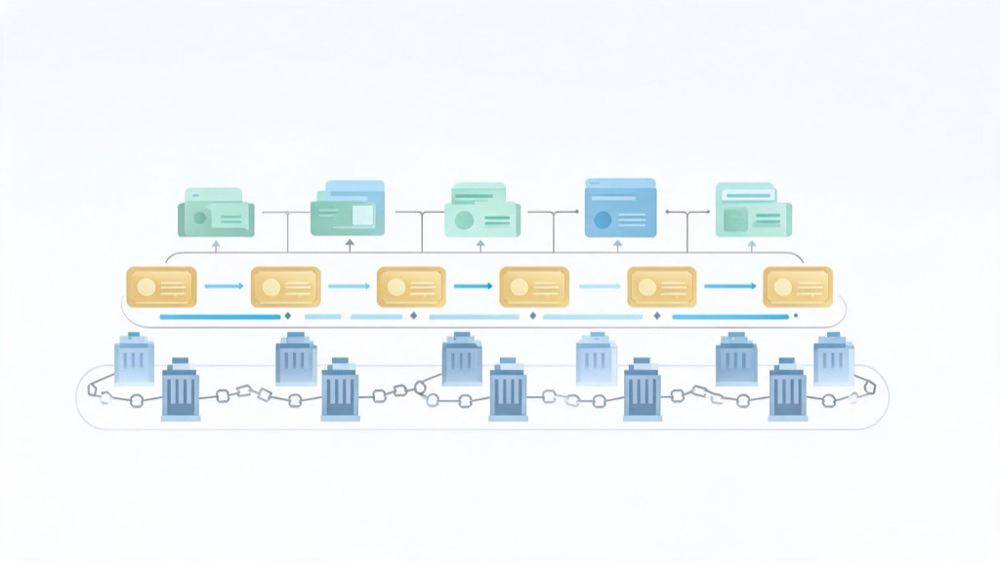

Circle 把 Arc public mainnet 的时间点指向 September 16, 2026，并把 BlackRock、Visa、Mastercard、DTCC、ICE 等名字放进 founding validators。同一条披露里，Aave、Morpho、Uniswap 也容易被读成同一张名单。我现在更愿意先把它当成一张还没完成验货的机构结算分工图：有些名字对应网络验证，有些对应资产与清算接口，有些只是应用和流动性出口。这个边界来自 Circle 的公告、外部报道和技术文档；它能支持 pre-launch 的结构判断，还不能支持 launch-day live status 或每个 partner 已经执行完成的结论。

我先把这条新闻放回披露状态
Circle Arc validator and integration announcement 给出的状态是：Arc 仍在 private mainnet，公开主网目标是 September 16, 2026。这是 Circle 自己披露的时间表，不是 public mainnet 已经开闸。现在看这条新闻，我会把 announcement、target、integration plan 和可观察运行状态拆开读，否则后面的判断很容易滑向已完成叙事。
Founding validator cohort 里，Circle 之外还包括 BlackRock、DTCC、Galaxy、Global Payments、ICE、Mastercard、MoneyGram、SBI Group、Standard Chartered、Sumitomo Corporation 和 Visa。The Defiant report on Arc permissioned validators 也把这批名字点了出来。它们给的是 base layer 上的运行与安全信号，但不等于每一家都会在 September 16 当天全部 live。validator cohort 的价值，在我看来，是说明 Circle 希望让哪些机构进入网络安全和运行层，而不是提前写满这些机构的生产状态。
Aave、Morpho、Uniswap 不在这份 founding validators 名单里。它们落在 DeFi、资本配置、流动性或应用侧的预期参与桶里，和谁去验证网络是两回事。如果把这些名字和 BlackRock、DTCC、Visa、Mastercard 放在同一平面，读出来的画面会更热闹，但也更模糊：好像所有参与者都在做同一种事。Arc 这次有意思的地方，反而是这些角色差异，而不是名单密度本身。
这也给文章结论画出边界。Circle 披露了 private mainnet 状态、public mainnet 目标日期、founding validators 和 integration categories；外部报道帮助确认这批名字与 permissioned validator 结构；技术文档给出产品设计语言。它们合在一起，可以支持一张 pre-launch 的分工图。它们还不能支持对 launch-day live status、应用生产可用性或每个 partner 执行进度的完整断言。
三层拓扑决定 Arc 的信号质量
把角色拆开后，结构比品牌墙清楚。第一层是机构与市场基础设施名字，它们守住或运行 permissioned 的验证网络。第二层接资产、托管、清算、FX、repo 和稳定币入口。第三层才是 DeFi、payments、钱包、custody 与 access。Arc 的信号来自这种分层：base layer 解决谁参与网络运行，中间层解决什么资产和结算流程可能进入，边缘层解决资产进入以后怎样获得流动性和用户触达。
这个分层也解释了 Arc 想卖的东西。它不只是多一条 EVM 网络，也不只是把 USDC 放到另一条链上流转。Arc technical documentation 把 Arc 写成稳定币原生的 Layer 1：USDC 作 gas、亚秒级确定性最终性、完整 EVM 兼容，以及 permissioned validator participation。这里的关键词连在一起时，指向的不是单一卖点。USDC gas 和 EVM compatibility 贴近开发者与稳定币使用体验；deterministic finality 贴近结算确定性；permissioned validator participation 则把机构网络的治理与运行边界放进来。
这些现在仍是文档与定位表述，public mainnet 行为可观察后才算进入验货。Circle 可以使用开放这类产品语言，但这个词需要和 permissioned validator set 放在一起读。现有材料不支持把 Arc 写成 launch 时的普通 permissionless L1。更准确的说法是：Arc 把开放应用层、EVM 开发体验和受许可的 validator participation 放在同一个设计里，目标是让稳定币结算、机构资产接口和应用层流动性处在同一张网络拓扑内。
这个结构对 crypto 读者尤其重要，因为它不太像纯 DeFi 链的叙事。普通应用链更常见的观察顺序是 TVL、生态项目、激励、开发者迁移和交易量。Arc 这条线，我会先看机构结算网络的参与者是否真的承担运行角色，再看资产和清算接口是否给出 partner-owned 或链上证据，最后看 DeFi 和 payment applications 能不能承接这些资产。顺序一变，application buzz 就容易被误读成 settlement proof。
BlackRock、DTCC 与 DeFi 名字各自有边界
BlackRock 同时出现在两条线上：它进入 founding validator cohort，也带着预期中的 BUIDL integration。BUIDL 本身早已可核查。BlackRock BUIDL launch release 记录了它作为 BlackRock 首个 tokenized fund 上线公共区块链。但 BUIDL-on-Arc 在已核对材料里仍是 expected，不是已经部署。这里的强信号在于 BlackRock 同时连接 validator 叙事和 tokenized fund 叙事；边界在于 Arc-specific deployment 还要等后续证据。
DTCC 的时钟更长。Circle 把 DTC 托管资产在 Arc 上的 tokenization 接到 2027 年下半年；DTCC tokenization service timeline 则有另一条自家时间线：有限生产交易目标指向 July 2026，服务上线目标指向 October 2026。两条线都真实，但后者并不单独确认 Arc 已成为其活跃 tokenization 网络。强信号可以先看，Arc-specific 的落地日期不能提前写死。
这类边界不是小字脚注，它直接影响文章结论。BlackRock 和 DTCC 都能抬高 Arc 的机构可信度，但抬高可信度不等于完成集成。BUIDL 的存在证明 BlackRock 已经有 tokenized fund 产品，不证明 BUIDL 已经跑在 Arc 上。DTCC 的 tokenization service timeline 证明它自己的服务节奏，不证明 Arc 已经进入其活跃网络。把这些句子拆开，partner name 才不会被写成 execution proof。
Aave、Morpho、Uniswap 的位置也可以放回应用层。它们不负责验证网络，也不应写成已经各自确认 production-ready 部署。它们的位置，是让稳定币结算和 tokenized assets 在应用层有借贷、交易和流动性出口。没有这一层，中间接进来的资产与清算轨道更容易停在封闭通道里；有这一层，也仍要等实际部署、流动性和用户行为来检验。
所以 DeFi 名字的价值不是治理 Arc，也不是给 Arc 的 base layer 背书。它们提供的是应用侧可能性：USDC gas、EVM compatibility 和机构资产接口如果真的跑起来，DeFi lending、capital allocation、swap liquidity 和 access products 才有可组合的入口。这个判断可以保留，但强度停在 expected around launch 更合适，不能写成已经 production-ready。
September 16 之后才进入验货阶段
在 September 16, 2026 public mainnet 证据出现之前，上线节奏、validator 是否实际运行、生态 readiness 和应用可用性都仍是 provisional。现在最稳的判断只到这里：披露支持把 Arc 读成稳定币原生的机构结算网络定位，证据来自分工，不来自名字堆叠。它把 Circle、founding validators、asset integrations 和 DeFi applications 放进同一张图，但这张图还处在 announcement 到 production proof 的中间阶段。
后续我会分层看。第一，看 public mainnet 是否真的打开，以及打开以后网络状态、区块生产、finality 和 EVM 兼容性是否能按文档主张运行。第二，看 founding validators 里有多少进入 live validators 状态，而不是只停在 cohort 名单里。第三，看 Aave、Morpho、Uniswap 一类应用是否进入可核查的生产状态，以及这些应用承接的是普通稳定币流动性，还是已经和 Arc 上的 tokenized asset flows 发生关系。
第四，看 BUIDL-on-Arc 是否出现 partner-owned 或链上证据。BlackRock 这个名字足够重，但越重的名字越需要把 expected integration 和 deployed integration 分清。第五，看 DTCC 相关 integration 是否给出 Arc-specific 证据，尤其是 DTC 托管资产 tokenization 与 2027 年下半年的连接是否按照 Circle 的叙述推进。DTCC 自己的 July 2026 和 October 2026 时间线可以作为背景，但不能替 Arc-specific 落地背书。
这样读，Arc 的公告既不需要降格成普通名单新闻，也不需要抬成华尔街全面上链的结论。它更像一个可验证的机构结算试题：base layer 由哪些机构参与运行，中间层能不能接进资产、托管、清算、FX、repo 和稳定币入口，边缘层能不能给这些资产提供 DeFi、payments、wallets、custody 和 access。名单已经亮出来了，验货从 September 16 之后才开始。